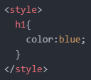
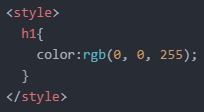
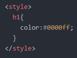
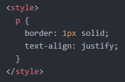

- 'font-size' 속성의 단위
- 'color' 속성
- 'text-align' 속성의 'justify' 속성값
텍스트의 크기를 조정할 때 사용하는 'font-size' 속성의 주요 단위로는 'px'와 'rem'이 있습니다.
'px' 단위는 값을 고정시키기 때문에 사용자가 임의로 텍스트의 크기를 조정할 수 없습니다.
반면, 'rem' 단위는 'html' 태그의 폰트 크기(크롬의 기본 크기는 16px)를 따르기 때문에 사용자가 임의로 텍스트의 크기를 조정할 수 있습니다.
즉, 사용자 편의에 맞게 텍스트 크기를 조정할 수 있다는 것이죠.
따라서 'px' 단위보다는 'rem' 단위를 사용하는 것이 바람직하다고 볼 수 있습니다.
예를 들어, 'font-size: 1rem;'을 적용했을 때 'html' 태그의 폰트 크기가 16px(크롬의 기본 크기는 16px)이라면 해당 속성을 적용한 텍스트의 크기는 16px이 됩니다.
만약 2rem으로 적용했다면 해당 속성을 적용한 텍스트의 크기는 32px이 됩니다.
그다음으로는 텍스트의 색상을 지정할 수 있는 'color' 속성에 대해 알아보겠습니다.
사실 이전에 CSS를 HTML로 착각하고 미리 해본 적이 있습니다. (참조)
그때는 인라인 방식이었고 오늘은 'style' 태그에 직접 적용해 보겠습니다.
우선 첫 번째 방식은 제일 간단한 방식입니다.
바로 다음과 같이 색상의 영어 이름으로 적용하는 방법입니다.

이렇게 하면 'h1' 태그가 적용된 텍스트의 색상이 파란색으로 바뀌게 됩니다.
두 번째 방식은 'RGB' 방식을 이용한 방식입니다.
똑같이 파란색을 적용할 시의 코드는 다음과 같습니다.

https://www.w3schools.com/css/css_colors_rgb.asp
참고로 위 사이트에서 원하는 색상의 RGB 조합을 찾을 수 있습니다.
그 다음 방식은 '16진수' 방식입니다.
똑같이 파란색을 적용할 시의 코드는 다음과 같습니다.

https://www.w3schools.com/css/css_colors_hex.asp
참고로 위 사이트에서 원하는 색상의 16진수 코드를 찾을 수 있습니다.
다음으로는 텍스트의 위치를 지정해 주는 'text-align' 속성의 'justify' 속성에 대해 알아보겠습니다.
'text-align' 속성은 이전에 공부했었는데, 당시 'right', 'left', 'center' 속성값만 공부했었습니다. (참조)
'justify' 속성값은 텍스트가 여러 문장으로 되어있을 때 유용한 기능입니다.
다음과 같은 문단이 있습니다.
보시다시피 테두리 좌측에 텍스트가 따닥따닥 붙어있는 반면, 테두리 우측에는 텍스트가 불규칙하게 떨어져 있습니다.
이때, 다음과 같이 'justify' 속성값을 적용시켜줍니다.

그리고 그 결과는 다음과 같습니다.
테두리와 텍스트가 너무 붙어있는 것을 알 수 있는데, 이는 이전에 배운 박스 모델을 통해 조정해 주면 되겠습니다.
오늘은 여기까지 하겠습니다.
그럼 내일도 화이팅!